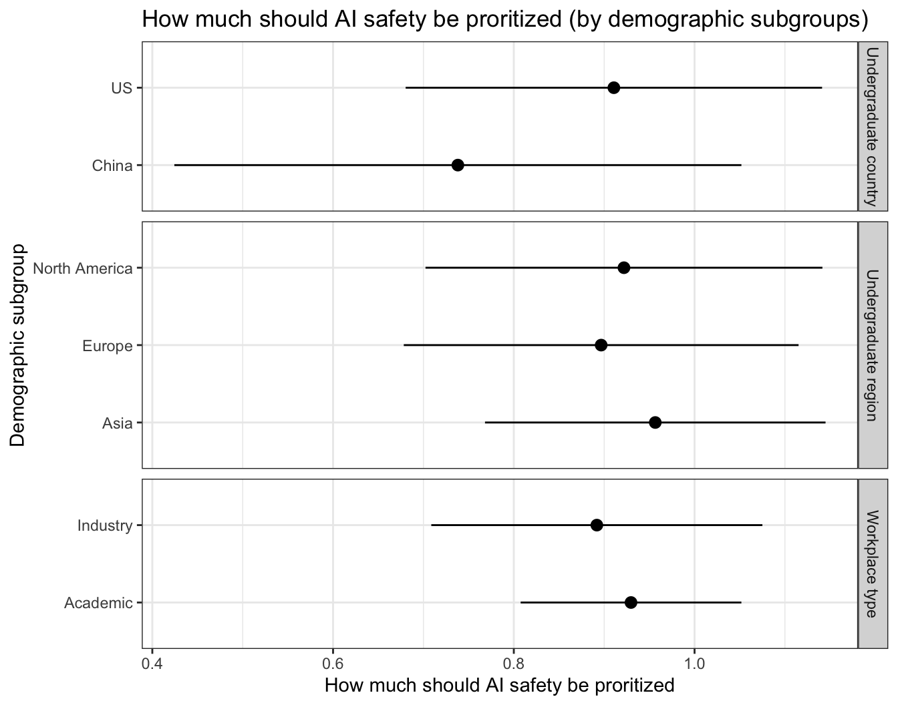
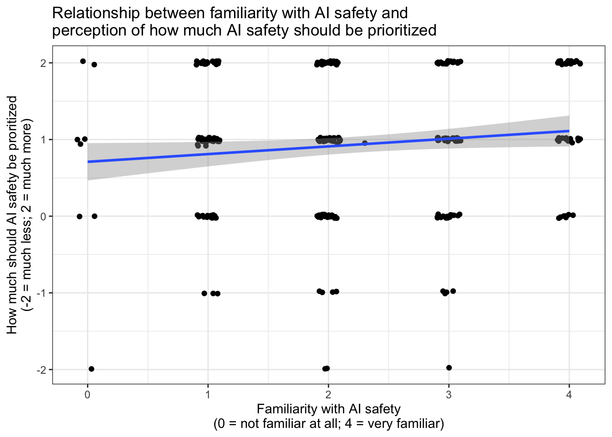

4 Results by demographic subgroups
| Subgroup | Subgroup type | Mean | SE | N |
|---|---|---|---|---|
| US | Undergraduate country | 2.48 | 0.15 | 56 |
| China | Undergraduate country | 1.98 | 0.17 | 42 |
| Europe | Undergraduate region | 2.12 | 0.12 | 69 |
| North America | Undergraduate region | 2.45 | 0.14 | 64 |
| Asia | Undergraduate region | 2.16 | 0.11 | 98 |
| Academic | Workplace type | 2.22 | 0.07 | 217 |
| Industry | Workplace type | 2.31 | 0.11 | 77 |
[1] 0.1193951
| Dependent variable: | |
| prioritize | |
| (Intercept) | 0.100* |
| (0.049) | |
| Familiarity with AI safety | 0.709*** |
| (0.125) | |
| Observations | 284 |
| R2 | 0.014 |
| Adjusted R2 | 0.011 |
| Residual Std. Error | 0.898 (df = 282) |
| F Statistic | 4.078* (df = 1; 282) |
| Note: | p<0.05; p<0.01; p<0.001 |
## Don't know how to automatically pick scale for object of type haven_labelled. Defaulting to continuous.